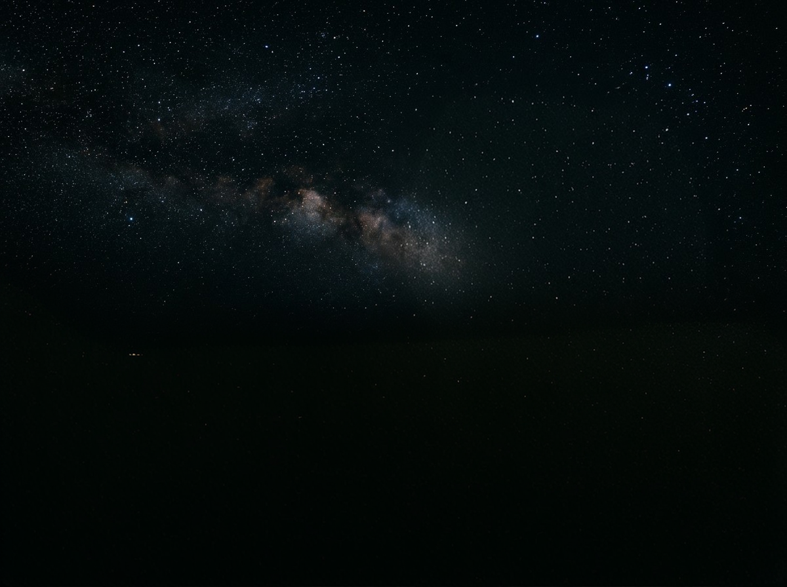
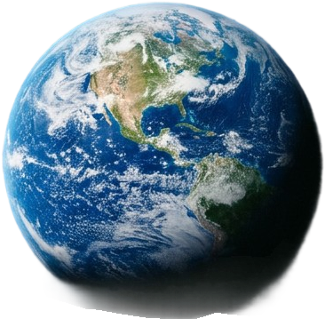
A P R O J E C T F O R Z E R O - G D I N I N G
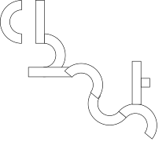
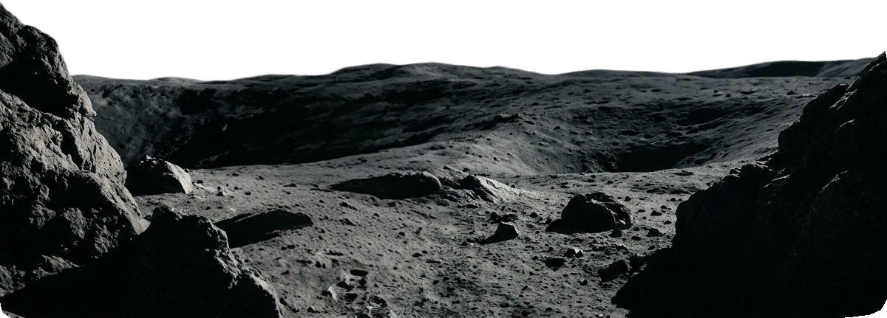
DAL GEU LOCK
떠 있는 몸으로 한 끼를 끝내는 일에 대하여
무중력 환경의 식사 경험을 위한 식기 디자인 아카이브
00 / WELCOME
곧 당신은 떠 있는 몸으로
첫 끼를 맞게 돼요.
지구에서는 중력이 조용히 해주던 일이 있어요. 놓아도 그 자리에 있어 주는 일이요. 궤도에서는 그걸 대신해 줄 것이 없어요.
그래서 우주에서의 식사는 먹는 일보다 붙잡는 일에 가까워요. 이 페이지는 당신의 첫 끼를 위한 안내예요. 언제, 어디서 먹게 되는지 그리고 무엇을 가져갈 수 있는지 차근히 짚어 드릴게요.
03 / KIT
무엇을 가져갈 수 있나요
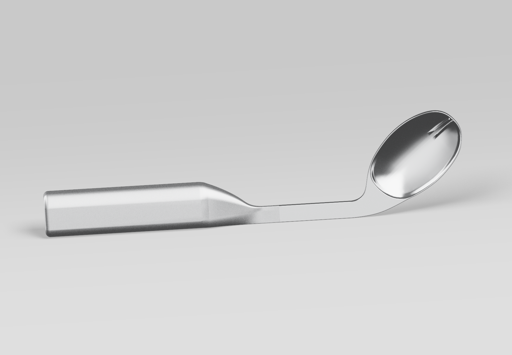
숟가락 · 포크
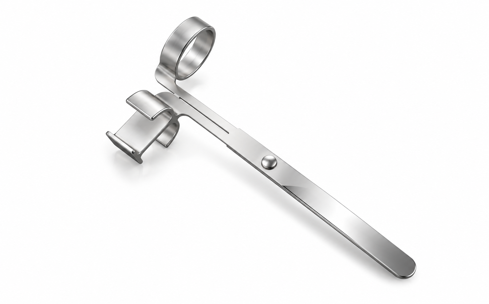
가위
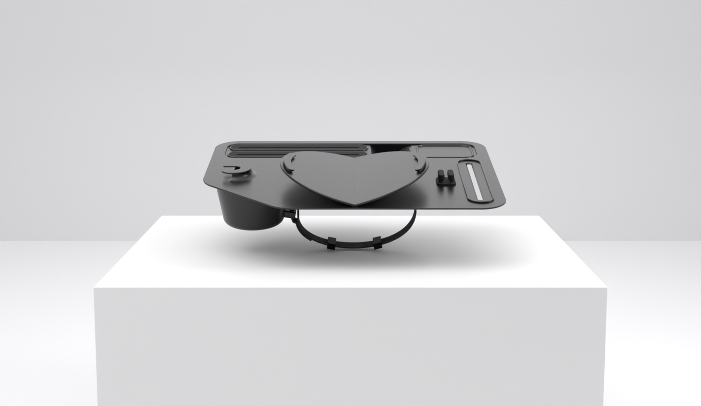
트레이
04 / INDEX
01
프로젝트 소개
ABOUT
→
02
리서치
→
03
관찰과 실험
→
04
디자인 전개
DESIGN
→
05
브랜드
BRAND
→
06
아카이브
ARCHIVE
→
DAL GEU LOCK · 달그락
무중력 식사 경험 프로젝트 · 2026 졸업작품
최은서 · 김민서 · 외 2인
ZERO-G
TABLEWARE
RESEARCH
EXPERIMENT
2026
2026
RESEARCH
EXPERIMENT
00
01
02
02 / WHERE
어디서 먹게 되나요
오리온에는 식당도, 식탁도 없어요. 거주 공간 330 ft³ — 미니밴 두 대쯤 되는 선실 안에
급수 장치와 식품 워머가 있고, 먹는 자리는 따로 정해져 있지 않아요.


A
B
C
D
최대 지름 5.03 m
식사와 관련된 네 지점
A
갤리 — 급수 장치 · 식품 워머
물을 넣고 데우는 일이 여기서 일어나요. 오리온의 음식은 바로 먹는 것, 물을 넣는 것, 가열살균한 것으로 나뉘어요.
B
위생실
문이 달려 있어요. 화장실과 개인 위생 키트를 들여놓을 자리가 있어요.
C
승무원 좌석 × 4
발사가 끝나면 두 좌석의 발판을 접어 선실을 조금 더 넓게 써요.
D
측면 해치 · 운동 장치
플라이휠이 해치 바로 아래에 있어요. 발사하는 날에는 발판으로도 써요.
내부 배치는 공개되지 않았어요. 기능을 기준으로 그린 개념도이고 실제 축척은 아니에요.
자료 — NASA


S E C T I O N — O R I O N C R E W M O D U L E
01 / WHEN
언제 먹게 되나요
창밖의 빛은 시간을 알려주지 않아요. 궤도에서의 하루는 일정표가 정해 줘요.
발사하는 날과 돌아오는 날을 빼면, 아침과 점심과 저녁 — 하루 세 번의 자리가 마련돼 있어요.
아침
B R E A K F A S T
점심
L U N C H
저녁
D I N N E R
기 상
취 침
표시한 위치는 예시예요. 실제 시각은 임무 일정에 따라 정해져요.
01
하루 세 끼
발사일과 착륙일을 빼면 아침·점심·저녁 시간이 일정표에 잡혀 있어요.
02
음료는 하루 두 잔
커피를 포함해 하루 두 가지예요. 실을 수 있는 무게가 정해져 있거든요.
03
2 – 3일치가 한 상자
당신 몫의 식량이 2~3일 단위로 한 상자에 담겨요. 그 안에서 고르면 돼요.
예 외
발사하는 동안과 돌아오는 동안에는 급수 장치를 쓸 수 없어요. 그 시간에는 물을 넣지 않고 바로 먹을 수 있는 것만 준비돼 있어요.
가져갈 수 있는 것은 정해져 있어요. 냉장이 없어 신선식품은 실리지 않고, 도구는 떠다니지 않아야 해요.
달그락은 그 조건 안에서 편하게 쓸 수 있도록 만든 세 가지예요.
반 입 조 건
한 손으로
제자리에 고정
날카롭지 않게
씻고 보관하기 쉽게
손바닥으로 감싸 쥐도록 두툼하게 만들었어요. 손끝에 힘을 덜 줘도 괜찮아요.
포장을 여는 도구예요. 실험에서 가장 오래 걸렸던 동작이라 제일 공들였어요.
음식과 도구를 올려두는 자리예요. 한 손이 계속 붙잡고 있지 않아도 돼요.
DAL GEU LOCK
ABOUT
RESEARCH
EXPERIMENT
DESIGN
BRAND
ARCHIVE
DAL GEU LOCK
ABOUT
RESEARCH
EXPERIMENT
DESIGN
BRAND
ARCHIVE
0 1 / A B O U T
식사 행동에서 식기의 형태로
우리는 식사를 준비하고, 음식과 도구를 붙잡고, 한입을 옮기는 행동에서 디자인의 질문을 찾았다. 이 아카이브는 영상 관찰에서 얻은 질문이 간접 체험과 제약 조건 실험을 거쳐 식기의 형태로 이어지는 과정을 기록한다.

간접 무중력 체험 · 용인 플라이스테이션 · 2026.09.12
01 / BACKGROUND
리서치
음식의 발전에서 식사 경험으로
우주식 리서치는 식품의 저장성과 공급, 영양, 기호성, 개발과 생산의 조건을 이해하는 출발점이었다.
그 다음에는 음식과 사람 사이의 도구에 주목했다. 같은 음식이라도 포장과 식기, 손의 움직임에 따라 식사 과정은 달라진다. 우리가 다루려는 문제는 식품 자체의 개선을 넘어, 음식을 다루는 동작과 식기의 관계에 있다.
02 / OBSERVATION
영상 관찰
식사 행동을 나누어 관찰하기
우주 비행의 식사 영상을 바탕으로, 식사를 하나의 동작이 아닌 연속된 행동으로 나누었다. 포장을 열고, 음식과 용기를 붙잡고, 소스와 재료를 옮기고, 식기를 입으로 가져오는 장면을 관찰했다.
01
FLOAT
떠 있는 대상의 위치를 관리한다
02
HOLD
음식, 포장, 도구를 붙잡는다
03
OPEN
포장과 뚜껑을 개봉한다
04
EAT
음식을 식기에 담아 입으로 옮긴다
03 / RESEARCH QUESTION
질문
미세중력 환경에서 대상을 안정적으로 관리하면서
식사 동작을 단순하게 만들 수 있을까?
영상은 식사의 순서와 도구의 사용을 보여주지만, 자세를 유지하면서 손을 움직일 때의 감각까지 전달하지는 않는다. 우리는 식사 동작을 몸의 경험과 연결하기 위해 간접 무중력 체험과 제약 조건 실험을 계획했다.
N E X T
리서치
02 · RESEARCH →
DAL GEU LOCK · 달그락
2026 졸업작품 · 무중력 식사 경험 프로젝트
DAL GEU LOCK
ABOUT
RESEARCH
EXPERIMENT
DESIGN
BRAND
ARCHIVE
0 2 / R E S E A R C H
지구 밖에서 한 끼를 완성하는 조건
우주식의 역사, 환경에 따라 달라지는 음식의 형태, 식품의 조달과 개발, 그리고 실제 식사 영상의 관찰. 네 갈래의 리서치가 하나의 질문으로 모인다 — 음식이 아니라 식사라는 행동은 궤도에서 어떻게 성립할까?
A / HISTORY
1961 → NOW
우주식의 역사
우주식의 역사는 메뉴의 변화가 아니라, 체류 시간과 우주선 기술이 바뀌면서 함께 발전한 식사 시스템의 역사다. 초기에는 무중력에서도 사람이 먹고 소화할 수 있는가를 확인하는 것이 과제였고, 임무가 길어지면서 무게와 부피, 보존성뿐 아니라 조리 방식과 식사의 다양성까지 범위가 넓어졌다.
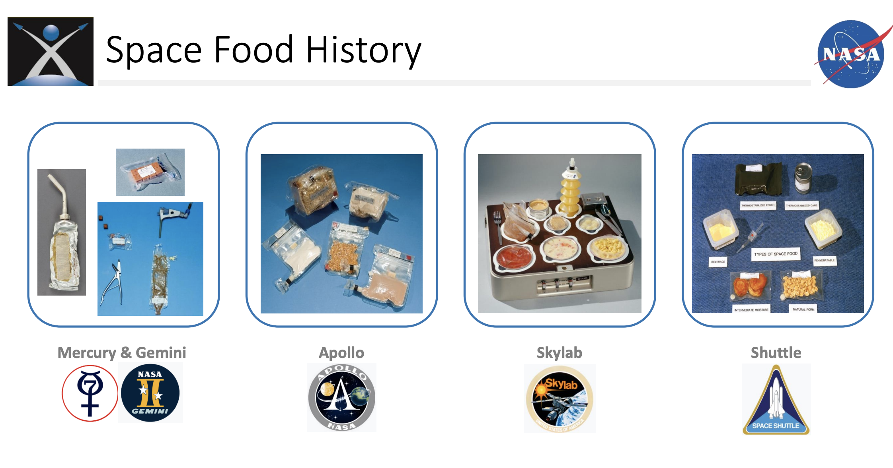
1961 – 1966
PROVING WE CAN EAT
무중력에서 음식을 삼키고 소화할 수 있는지조차 확인되지 않은 시기. 1961년 소련의 게르만 티토프가 우주에서 음식을 섭취했고, 1962년 존 글렌이 미국인 최초로 식사했다. 음식은 알루미늄 튜브에 담긴 쇠고기·채소 퓌레나 사과소스 형태였다.
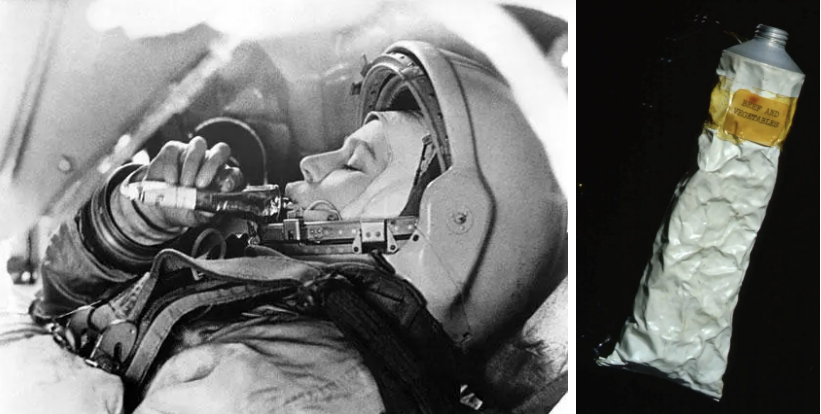
1968 – 1972
APOLLO / REHYDRATABLE FOOD
우주선 연료전지에서 물을 얻을 수 있어 동결건조 식품을 본격적으로 활용했다. 승무원은 포장에 물을 주입해 음식을 재수화한 뒤 먹었고, 임무가 진행되며 뜨거운 물을 이용한 재수화와 숟가락으로 떠먹는 포장 형태도 도입됐다.
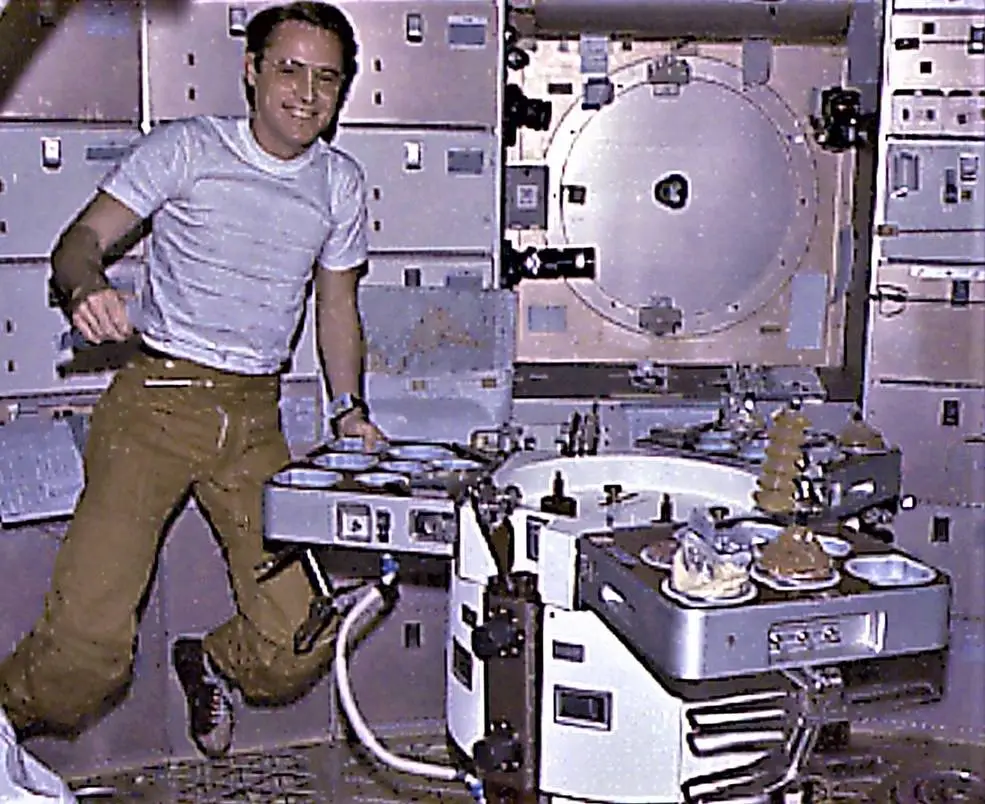
1973 – 2000s
FROM FOOD TO MEAL
장기 체류가 본격화되며 시스템은 음식 자체를 넘어 식사 환경으로 확장됐다. Skylab에는 냉장·냉동 시설과 가열 가능한 트레이가 도입되어 약 72종을 제공할 수 있었고, 포크와 숟가락 같은 일반 식기도 적극적으로 사용됐다.
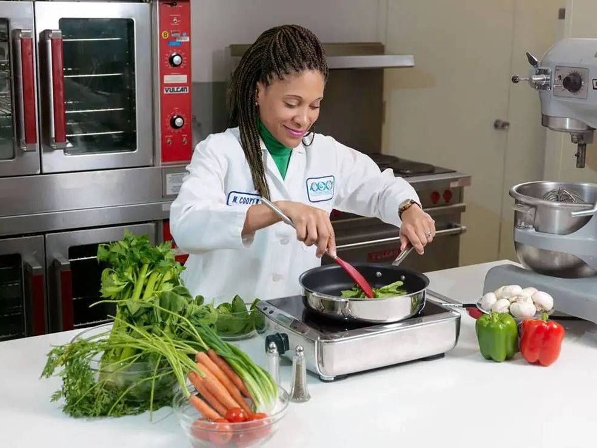
2000s – NOW
FOOD AS PART OF LIFE
ISS 체류가 수개월 단위로 길어지며 음식의 역할은 영양 공급을 넘어섰다. 제한된 공간에서 반복되는 생활 속에서 음식은 건강뿐 아니라 기호, 문화적 정체성, 심리적 안정과 사회적 교류에도 영향을 미친다.
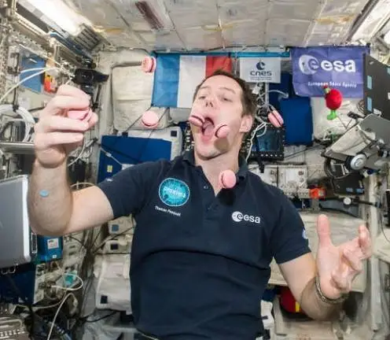
2014 – NOW
GROWING FOOD IN SPACE
연구의 범위가 무엇을 가져갈 것인가에서 우주에서 직접 생산할 수 있는가로 확대되고 있다. NASA의 Veggie 재배 시스템은 2014년 ISS에서 검증을 시작했고, 첫 상추 작물은 안전성 검사를 위해 지구로 돌아왔다.
B / HOW WE EAT
환경
우주에서는 식사하는 방법부터 달라진다
지구에서의 식사는 음식을 식탁 위에 놓고 그릇과 수저를 자유롭게 움직이는 익숙한 행동으로 이루어진다. 그러나 미세중력에서는 음식과 식사 도구가 제자리에 머물지 않기 때문에 이 전제가 성립하지 않는다. 작은 음식물이나 도구도 떠다닐 수 있어 보관부터 준비, 섭취, 정리까지 모든 과정에서 고정과 관리가 필요하다.
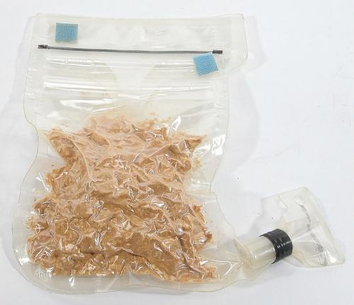
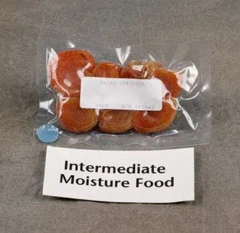
ISS 식사 장면 · NASA
한 끼가 준비되는 과정
FROM PACKAGE TO MEAL
01
보관
→
02
고정
→
03
물 주입 · 가열
→
04
개봉
→
05
섭취
→
06
정리
C / FOOD TYPES
형태
환경에 따라 달라지는 음식의 형태
우주식은 메뉴가 아니라 보존 방식과 식사 전 준비 과정에 따라 나뉜다. 장기간 상온 보관이 가능해야 하고, 무게와 부피를 줄이면서도 미세중력에서 안전하고 간단하게 준비할 수 있어야 한다. 현재 ISS의 식품 시스템도 서로 다른 가공·포장 방식을 함께 사용한다.
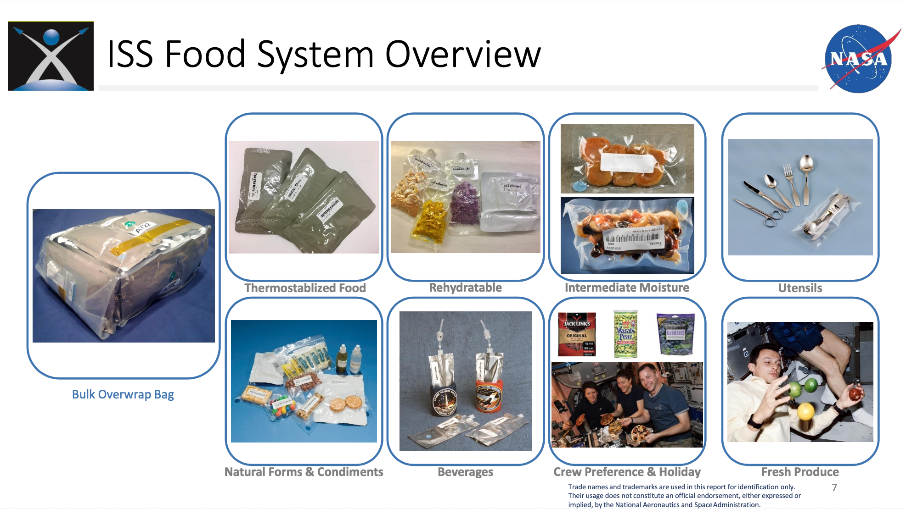
NATURAL FORM
자연형 식품
재수화나 가열 없이 바로 먹는 식품. 견과류·쿠키·그래놀라 바. 부스러기가 적고 취급이 쉬운 형태가 선호된다.
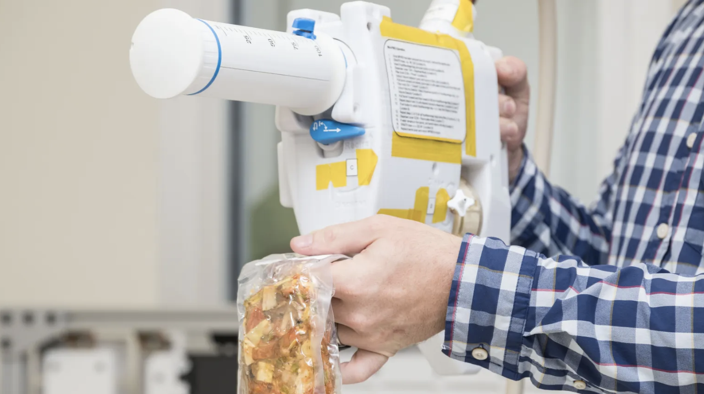
REHYDRATABLE
재수화 식품
수분을 제거해 무게와 부피를 줄인 식품. 먹기 전 정확한 양의 물을 주입해 되돌린다.
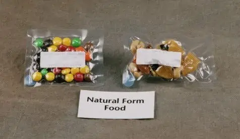
THERMOSTABILIZED
가열살균 식품
최종 포장 상태로 열처리해 냉장 없이 상온 장기 보관이 가능하다. 파우치형 식사가 여기에 해당한다.
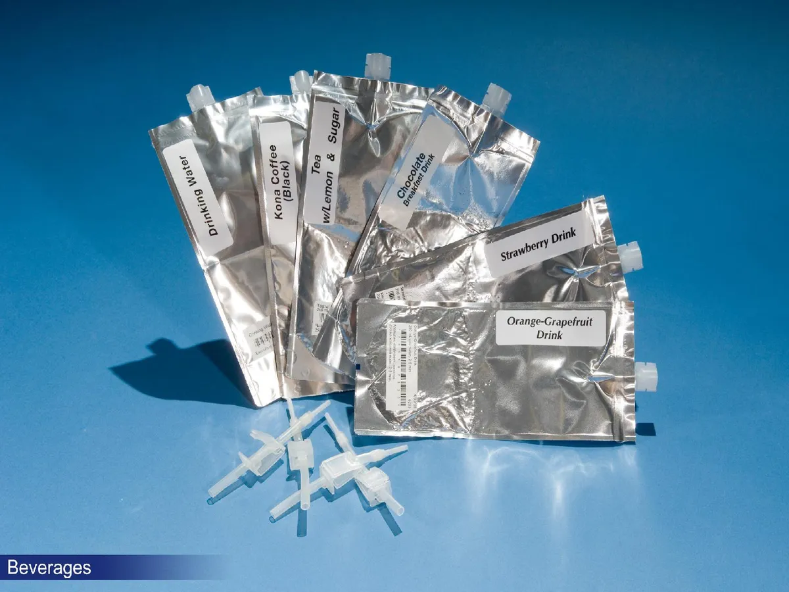
IRRADIATED
방사선 조사 식품
이온화 방사선으로 멸균한다. 미국에서 이 방식의 식품 멸균을 FDA 승인받은 기관은 NASA가 유일하다.
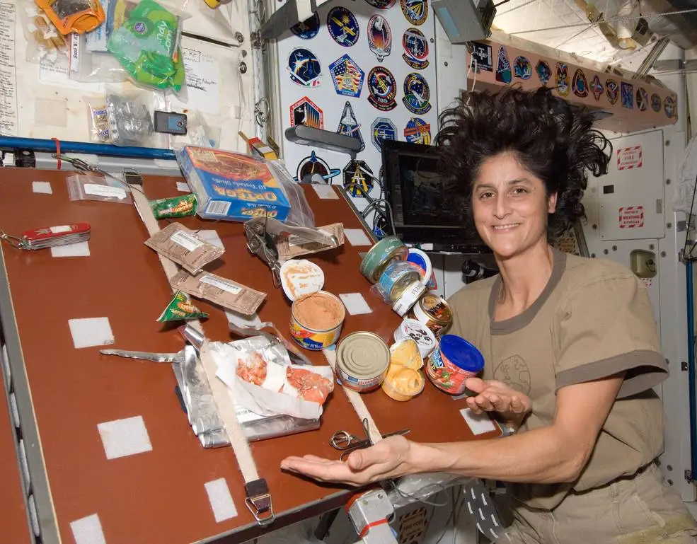
FRESH PRODUCE
신선 식품
보급 직후 제한적으로 제공된다. 식단의 중심은 아니지만 메뉴의 다양성과 만족도를 높인다.
* WHY TORTILLAS, NOT BREAD? — 빵은 부스러기가 떠다니기 때문에, ISS에서는 또띠아가 주식의 역할을 한다.
D / SUPPLY & R&D
조달 · 개발
5년 유통기한이라는 과제
NASA의 Advanced Food Technology Project는 식품 시스템 전체의 질량과 부피, 폐기물을 줄이면서 유통기한을 5년까지 늘리는 것을 목표로 한다. 5년이라는 숫자는 화성 왕복 임무에서 나온다. 약 2년 6개월의 비행 동안 보급은 없고, 식량은 출발 전에 모두 선적된다. 문제는 현재 기술로는 2~3년이면 품질과 영양이 기준 아래로 떨어진다는 점이다.
현재 기술 한계
2 ~ 3 년
화성 임무 요구
5 년
허들 기법
단일 해법이 없다는 것이 확인됐기 때문에, 연구는 여러 수단을 겹쳐 쓰는 방식으로 진행된다. 보관 온도와 가공 공정, 배합, 원료, 포장재를 각각 조금씩 개선해 합산 효과를 낸다. 가공 공정에서는 고온을 짧게 가하는 마이크로파 멸균이 대안으로 검토되고 있다.
가공 방식
열안정화
레토르트 가열 살균. 상온 보관이 가능해지고 유통기한이 3년까지 늘어난다.
동결건조 · 탈수
수분을 제거해 질량과 부피를 줄인다. 먹기 전 물을 다시 넣는다.
방사선 조사
이온화 방사선으로 멸균한다. FDA 승인을 받은 기관은 NASA가 유일하다.
자연 형태
견과류, 쿠키처럼 가공 없이 그대로 포장하는 품목.
개발 절차
개발 · 시제품
JSC 17동
관능평가
감각 부스
유통기한 시험
보관 후 재평가
승무원 시식
발사 전
메뉴 확정
수개월 전
개발의 병목은 맛이 아니라 시간이다. 5년을 버티는지 확인하려면 실제로 5년을 보관해야 한다.
현지 생산 연구 — NASA와 캐나다우주국은 2021년부터 2024년까지 Deep Space Food Challenge를 열어 현지 식량 생산 기술을 공모했다. 32개국 300개 이상의 팀이 참가했고, 최종 단계에서 125만 달러가 세 팀에 돌아갔다. 다만 승무원 시간과 설비 부피 때문에 당분간 심우주 임무의 주 식량은 여전히 사전 포장 식품이 될 전망이다.
E / VIDEO RESEARCH
관찰
직접 경험하기 어려운 환경을 영상으로 관찰하다
우주에서의 식사를 직접 관찰하기 어려운 한계를 보완하기 위해 NASA, ESA 및 ISS 승무원이 공개한 실제 식사 영상을 분석했다. 무엇을 먹는가보다 음식이 준비되고, 고정되고, 개봉되고, 섭취된 뒤 정리되는 과정에서 나타나는 행동에 집중했다.
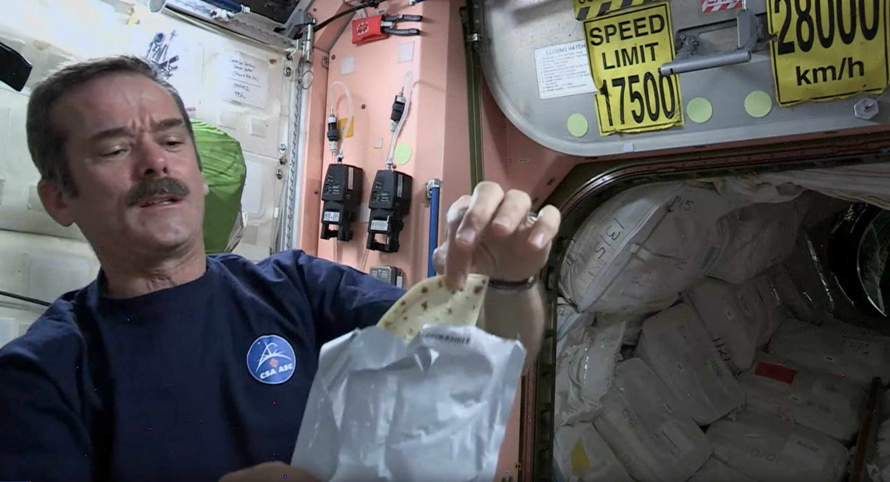
01
PREPARE
1:08
포장을 열고 식사 재료를 준비한다.
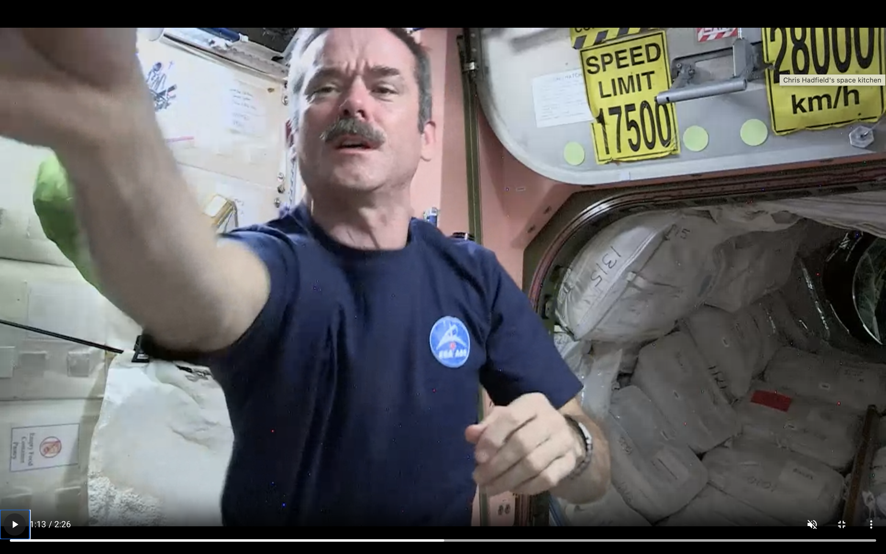
02
CONTROL
1:18
고정되지 않은 음식은 작업 중 쉽게 위치를 이탈한다.
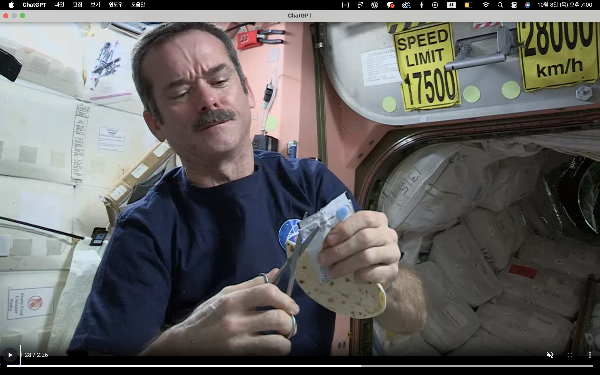
03
OPEN
1:30
손으로 열기 어려운 포장은 별도의 절단 도구가 필요하다.
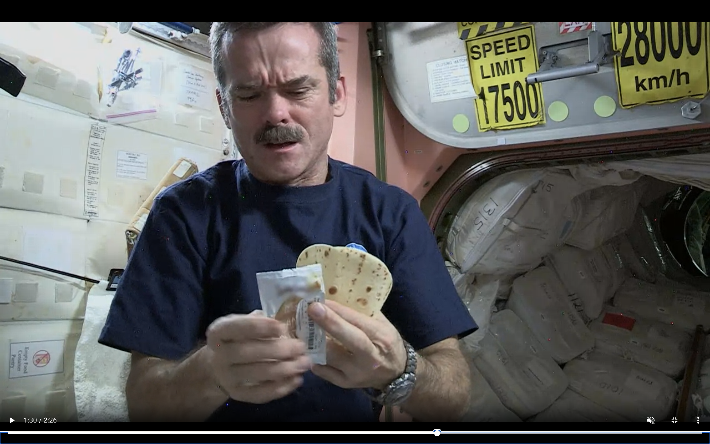
04
ASSEMBLE
1:43
음식을 유지하면서 동시에 내용물을 조작한다.
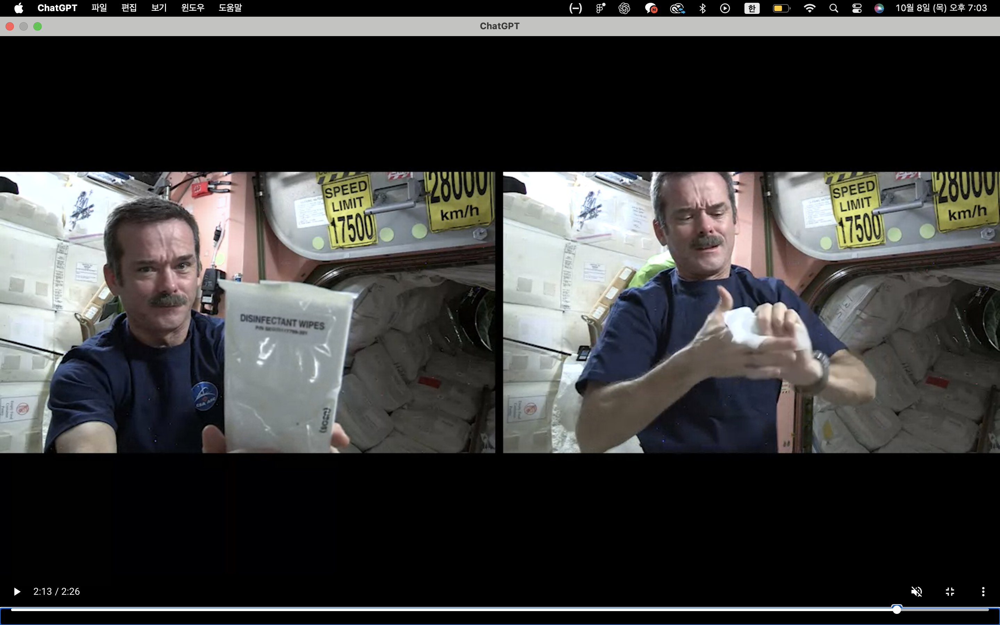
05
CLEAN
2:12
흐르는 물 대신 와이프를 이용해 식사 후 정리한다.
OBSERVATION
SECURING THE MEAL
고정되지 않은 물체를 다루기 위해 손이나 주변 표면이 임시 고정점으로 사용된다.
OBSERVATION
CONTROLLING LIQUIDS
액체 자체를 제어하기보다, 액체가 빠져나오지 않는 용기 시스템을 지속적으로 조작한다.
OBSERVATION
TOOLS & CLEANUP
도구의 문제는 잡기 쉬운가에 그치지 않고 꺼내기 → 사용 → 임시 고정 → 세척 → 보관까지 이어진다.
R E S U L T
식사의 불편은 섭취하는 순간이 아니라, 고정 · 준비 · 개봉 · 정리로 이어지는 연속된 조작 과정에 분포해 있다.
N E X T
관찰과 실험
03 · EXPERIMENT →
DAL GEU LOCK · 달그락
자료 — NASA, ESA, Smithsonian NASM
DAL GEU LOCK
ABOUT
RESEARCH
EXPERIMENT
DESIGN
BRAND
ARCHIVE
0 3 / E X P E R I M E N T
몸으로 확인한 제약
영상은 순서를 보여주지만 감각을 전달하지 않는다. 우리는 두 번의 실험을 거쳤다 — 수직풍동에서의 간접 무중력 체험, 그리고 신체 조작을 일부러 제한한 상태에서의 식사 준비 실험.
A / UT1 · INDIRECT ZERO-G
간접 체험
떠 있는 몸이 아니라, 말을 듣지 않는 근육과 관절
영상은 식사의 순서와 도구의 사용을 보여주지만, 자세를 유지하면서 손을 움직일 때의 감각까지 전달하지는 않는다. 그래서 수직풍동 시설에서 간접 무중력 체험을 진행했다. 가장 인상적이었던 것은 몸 전체가 떠오르는 감각보다, 손가락처럼 작은 신체 부위를 원하는 만큼 정교하게 쓰기 어렵다는 점이었다.
간접 무중력 체험 현장 · 용인 플라이스테이션
일 시
2026. 09. 12 오전 11:30
장 소
용인 플라이스테이션 · 수직풍동
참 여
최은서 · 김민서 (2명)
비 행
1인당 2분 · 각 1회차
관찰 동작
손을 접었다 펴기 / 다리를 펴고 접기
기 록
행동 메모 · 현장 사진
방법의 한계
수직풍동은 아래에서 올라오는 공기의 저항으로 몸을 띄우는 장치이며, 미세중력과 같지 않다. 이 체험은 무중력의 재현이 아니라 신체 조작이 제한된 상태를 간접적으로 경험하기 위한 과정이었다.
B / UT2 · TEST CONDITION
제약 조건
우리가 일부러 불편하게 만든 이유
두 번째 실험에서는 실제 미세중력을 재현하는 대신, 1차 체험에서 관찰한 신체 조작의 제약을 지상에서 다시 만들었다. 팔의 움직임에 부담을 주어 큰 동작을 요구하고, 손가락을 테이핑해 세밀한 조작을 제한했으며, 일부 상황에서는 한 손만 사용할 수 있도록 했다.
EXPERIMENT SETUP
MOVE
양팔 1kg 모래주머니
팔과 손의 이동 부담 증가
FINE CONTROL
열 손가락 테이핑
작은 관절과 손끝 조작 제한
ONE HAND
일부 과업에서 한 손 사용 제한
고정과 조작을 동시에 수행하는 상황 탐색
TOOLS
파우치 / 또띠아 / 숟가락 / 가위 / 소스
실제 식사 준비에 필요한 서로 다른 조작 포함
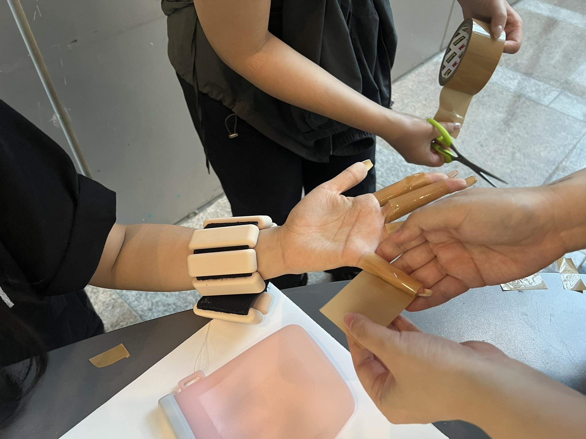
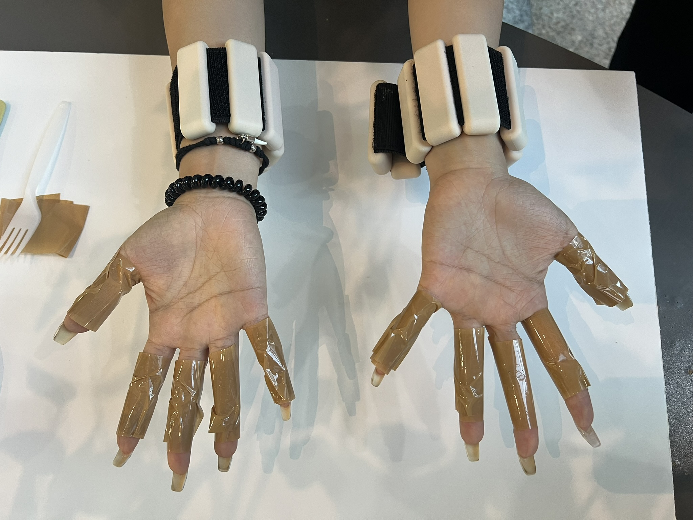
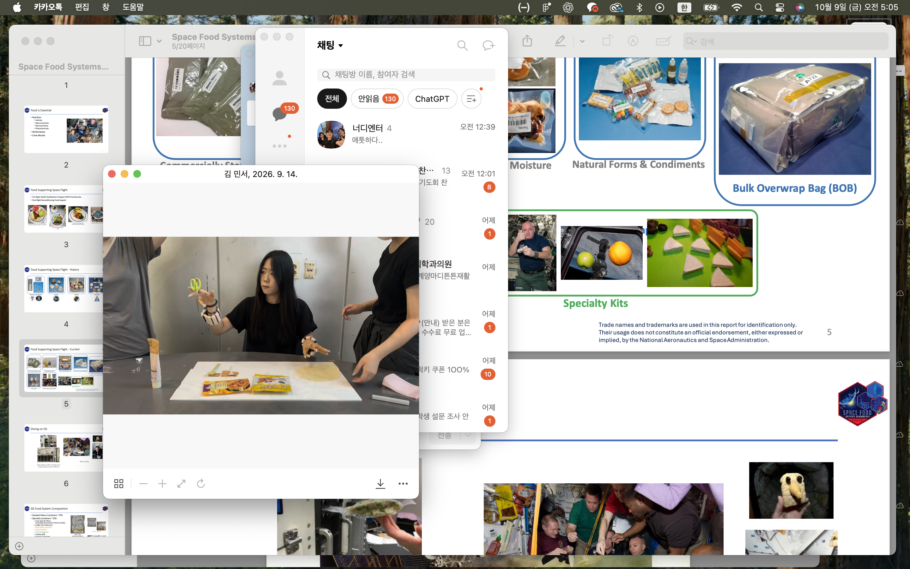
제약 조건 세팅 · 모래주머니, 테이핑, 식재료와 도구
C / TASKS
네 가지 과업
WHAT KEPT INTERRUPTING THE MEAL?
식재료는 또띠아, 소스, 파우치 식품을 사용했고 도구는 숟가락과 가위를 사용했다. 네 가지 과업에서 반복된 것은 먹는 어려움이 아니었다.
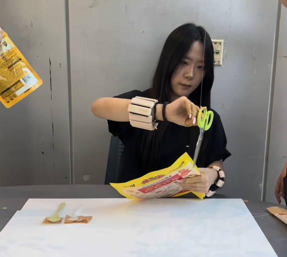
01
포장 개봉
세밀한 손동작 어려움
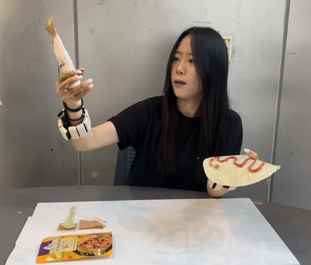
02
소스 사용
양손 동시 사용 불가능
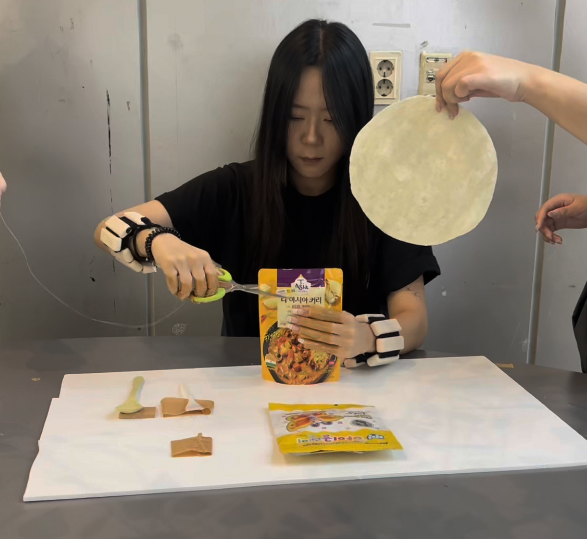
03
여러 재료 준비
반복적인 작업 전환 어려움
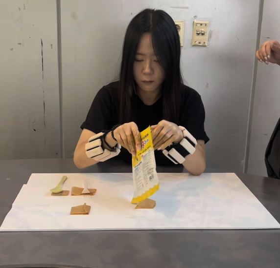
04
파우치 섭취
입구를 열린 채로 유지하기 어려움
TASK 01 · OPEN & OPERATE
“가위를 집는 것부터 생각보다 어려웠다.”
포장을 열기 위해 가위를 잡는 순간부터 예상보다 많은 시간이 필요했다. 손가락이 테이핑되어 있어 손잡이에 손가락을 정확히 넣는 동작이 어려웠고, 손끝으로 각도를 미세하게 조절하기도 쉽지 않았다. 평소에는 집고 자르면 끝나는 행동이었지만, 제약이 생기자 도구를 잡는 것 → 위치를 맞추는 것 → 자르는 것이 각각 별개의 과제가 됐다.
TASK 02 · HOLD & PREPARE
“한 손은 계속 무언가를 붙잡고 있었다.”
또띠아를 들고 있으면 다른 재료를 잡을 수 없었고, 소스 용기를 사용할 때는 뚜껑과 본체를 동시에 잡아야 했다. 하나의 동작을 끝내기 전에 다음 물체를 놓을 곳부터 찾아야 했다. 여러 재료를 동시에 준비할 때 작업은 특히 자주 중단됐다.
D / FINDINGS
발견
네 가지로 반복된 제약
MOVE
정교한 움직임이 어렵다
손가락과 팔의 조작 범위가 제한되자 작은 위치 조정에도 더 큰 동작과 시간이 필요했다.
HOLD
한 손이 계속 고정에 사용된다
음식이나 용기를 놓아둘 수 없다고 가정하자 한 손이 지속적으로 임시 고정 장치의 역할을 했다.
OPERATE
여러 조작이 동시에 발생한다
잡기, 유지하기, 맞추기, 조작하기가 한 동작 안에서 겹쳐 작업이 자주 중단됐다.
PROTECT
도구 사용에 안전 문제가 따른다
가위처럼 날카로운 도구와 부유하는 물체를 함께 다루면서 위험이 함께 발생했다.
K E Y I N S I G H T — F I N E M O T O R C O N T R O L
세밀한 조작이 제한되면 도구 자체보다, 도구를 사용할 수 있는 상태를 만드는 과정에서 부담이 커진다.
E / TURNING POINT
전환점
문제는 식기의 형태보다,
식사를 가능하게 만드는 과정에 있었다
실험 전까지 우리는 무엇을 먹는가를 담는 식기에 집중하고 있었다. 그러나 직접 제한된 신체 조건에서 식사를 준비해보자, 우리가 가장 많이 멈춘 순간은 섭취 자체가 아니었다. 포장을 열고, 음식물을 한쪽으로 모으고, 재료를 고정하고, 여러 물체를 번갈아 잡고, 사용한 도구를 다시 안전하게 두는 과정에서 작은 부담이 반복됐다.
DESIGN QUESTION
How might we reduce the small physical burdens
that accumulate before a meal begins?
01
LESS FINE CONTROL
손끝의 정밀 조작을 덜 요구할 것
02
ONE-HAND SUPPORT
한 손만으로도 가능한 행동을 늘릴 것
03
STABILIZE FIRST
사람의 손 대신 도구가 고정 역할을 분담할 것
04
SAFE HANDLING
날카로운 도구와 부유하는 물체의 위험을 줄일 것
N E X T
디자인 전개
04 · DESIGN →
DAL GEU LOCK · 달그락
UT1 2026.09.12 · UT2 제약 조건 실험
DAL GEU LOCK
ABOUT
RESEARCH
EXPERIMENT
DESIGN
BRAND
ARCHIVE
0 4 / D E S I G N
페인포인트를 형태로
실험에서 발견한 네 가지 제약을 디자인 원칙으로 바꾸고, 그 원칙을 손잡이의 곡선과 헤드의 방향, 기능 사이의 전환이라는 구체적인 형태로 옮겼다.
A / PRINCIPLE
디자인 원칙
C · D · S · P — 제약을 원칙으로
UT2에서는 정교한 움직임의 어려움, 지속적인 고정의 필요, 여러 조작의 동시 발생, 도구 사용에 따른 안전 문제가 반복적으로 나타났다. 달그락은 이를 단순한 불편 목록으로 남기지 않고, 이후 모든 제품과 시각 시스템이 공유해야 할 네 가지 디자인 원칙으로 전환했다.
C
CONTROL
움직이는 음식과 도구의 위치를 사용자가 계속 직접 관리하지 않아도 되도록 제어 가능한 상태를 만든다.
D
DOCK
손이 수행하던 붙잡기를 구조와 환경이 대신하도록 안정적인 고정점을 제공한다.
S
SIMPLIFY
잡기, 유지하기, 맞추기, 조작하기로 나뉘던 과정을 더 적은 동작과 한 손 중심으로 단순화한다.
P
PROTECT
날카로운 도구와 부유하는 물체가 만들어내는 위험을 줄여 사용자와 주변 환경을 보호한다.
B / DIRECTION
디자인 방향
식기와 트레이가 함께 다루는 문제
식기를 디자인하며 잡기 편한 손잡이, 손목과 팔의 움직임을 고려한 헤드 방향, 기능 사이의 전환, 사용하지 않는 부분의 배치를 고려했다. 트레이에는 음식과 용기, 도구를 놓는 위치를 제공해 손이 지속적으로 고정에 사용되는 상황을 줄이기로 했다.
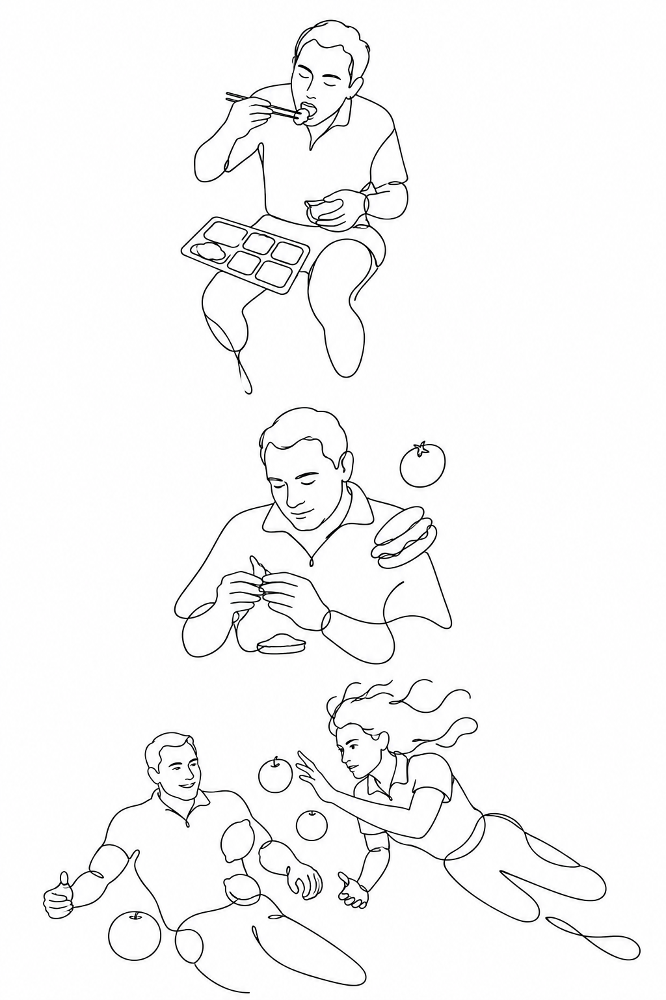
디자인 방향 다이어그램 · 프로세스북 18p
C / SPOON
숟가락
손바닥으로 감싸는 숟가락
숟가락에서는 잡는 방식부터 다시 생각했다. 손가락 끝으로 좁은 부분을 조작하는 형태에서 출발해, 손바닥으로 감싸 쥘 수 있는 볼륨을 탐색했다. 손잡이와 헤드는 부드러운 곡선으로 연결되도록 구상했다. 실제로 얼마나 편한지, 잡는 힘과 손의 크기에 따라 차이가 있는지는 후속 비교가 필요하다.
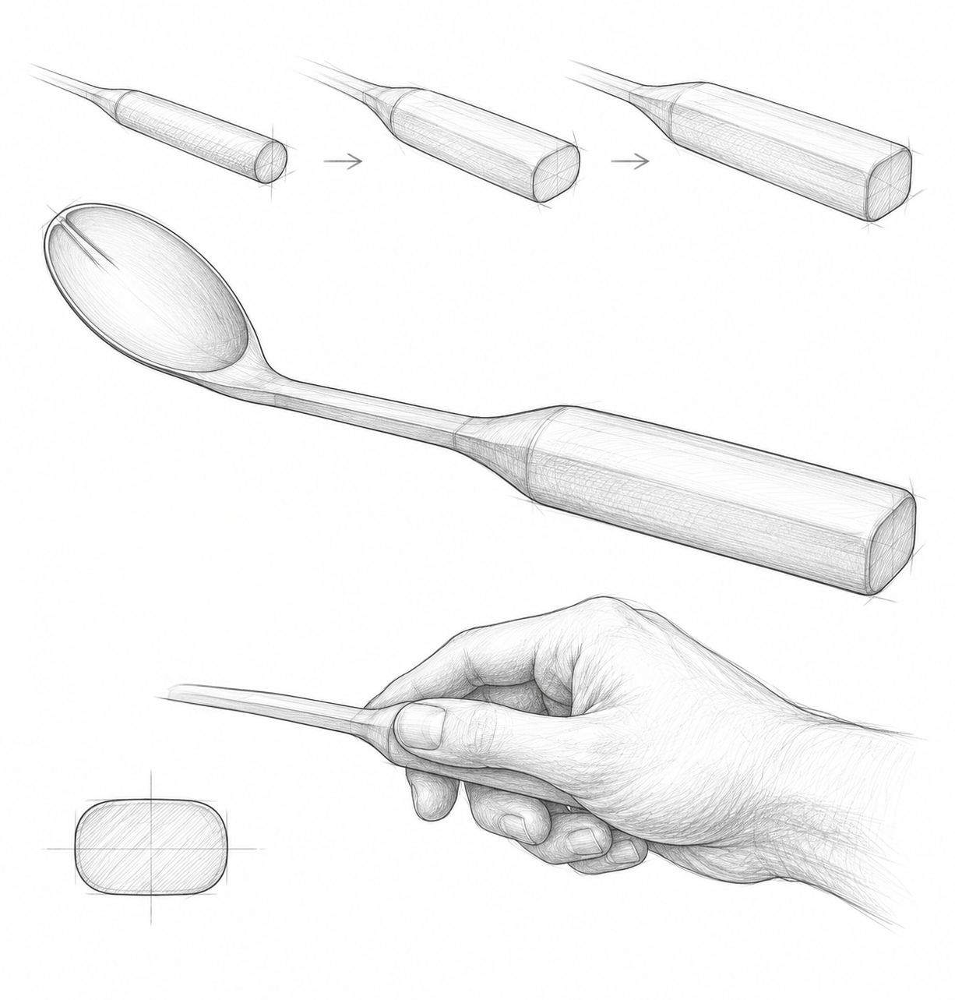
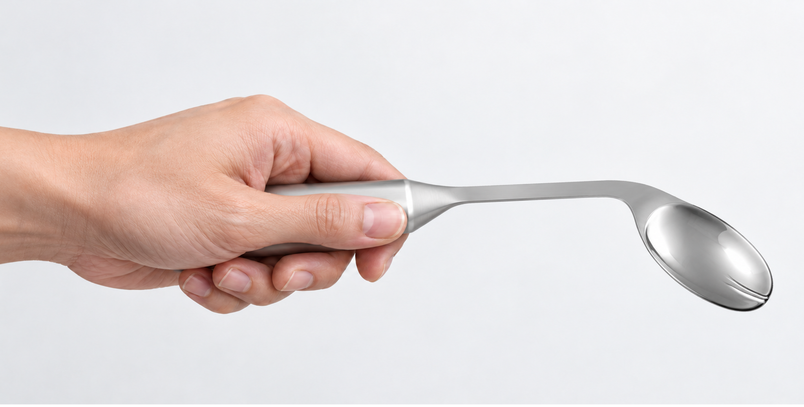
손목과 헤드의 방향
숟가락 헤드의 방향은 음식을 뜨고 입으로 옮기는 동작을 고려해 탐색했다. 손목과 팔을 크게 조정하는 대신 식기의 방향이 움직임을 보완할 수 있는지 질문했다. 오른손과 왼손 사용의 차이도 함께 검토했으며, 좌우 사용 방식에 따라 형태를 나누는 가능성을 열어 두었다.
다음 검증
D / MATERIAL & SHAPE
재료와 형태
음식이 머무는 형태의 탐색
우주용 컵의 사례에서는 컵의 형상과 표면장력, 젖음성이 액체의 이동에 관여한다. 중력 이외의 조건으로 액체를 다루는 접근을 참고해, 이를 숟가락의 볼 형태와 재료를 탐색하는 질문으로 확장했다. 음식을 담는 면과 가장자리의 형상, 표면의 성질이 음식의 이동과 남는 상태에 어떤 영향을 주는지 살펴보았다.
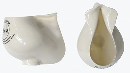
렌더링 이미지
E / SCISSORS
가위
손을 감싸 쥐는 동작으로 자르기
우주비행사의 가위 사용 영상에서 손가락의 위치와 자르는 동작을 관찰했다. 검지를 링 위에 대고 지지하는 모습을 직접 따라 하며, 손가락을 끼우는 구조뿐 아니라 가위의 흔들림과 방향을 조절하는 접촉면에 주목했다.
유저 테스트에서 작은 관절을 세밀하게 움직이기 어려웠던 점을 바탕으로, 엄지는 링에 끼우고 검지와 중지는 반대편 손잡이를 감싸 쥐는 형태를 제안했다. 손 전체를 오므리고 펴는 동작으로 두 날을 조절하도록 구성했다.
잡는 방식
엄지 — 링에 끼워 지지하기
지지하는 면
검지 · 중지 — 감싸 쥐어 조절하기
조작의 방향
작은 관절에서 손 전체의 움직임으로
[ 이미지 ] 가위 사용 관찰 / 손가락 위치와 그립 탐색
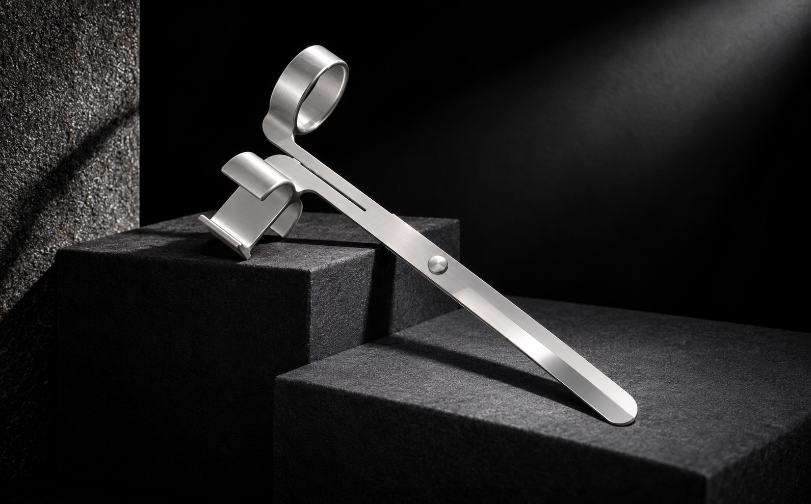
F / TRAY
트레이
쓰지 않는 순간에도 제자리에
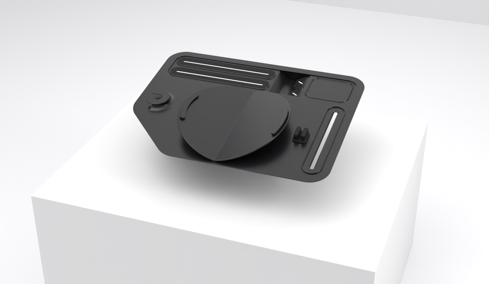
트레이 전체 형태
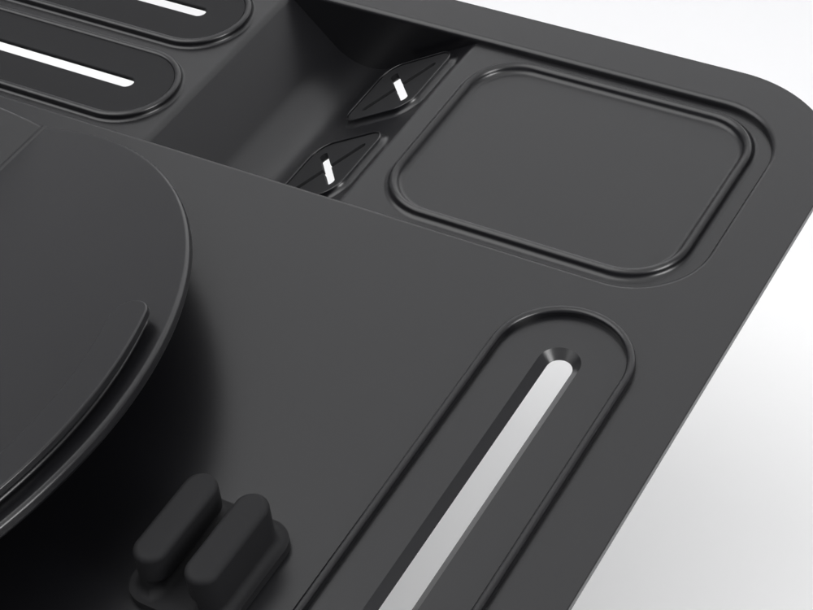
수저 홀더 · 패키지 짜개
다리에 고정한 사용 상태
N E X T S T E P
기존 도구와 제안한 가위·트레이를 같은 식사 과제로 비교한다. 가위의 잡는 힘과 손 크기별 조작감, 도구를 꽂고 빼는 동작, 파우치와 또띠아의 고정 상태, 세척과 보관을 후속 검증의 기준으로 삼는다.
N E X T
브랜드
05 · BRAND →
DAL GEU LOCK · 달그락
DAL GEU LOCK · DESIGN ARCHIVE
UT2에서는 식기를 쓰는 동작보다 쓰지 않는 도구를 어디에 둘지가 반복적으로 걸림돌이 됐다. 파우치를 자르거나 음료를 집는 동안에도 음식과 용기, 도구를 계속 붙잡아 두어야 했다.
트레이는 그 고정을 대신하는 면으로 구상했다. 숟가락과 가위가 각각의 동작을 맡는다면, 트레이는 그 동작들이 일어나는 바탕을 맡는다. 손은 지금 사용하는 도구에 집중할 수 있도록 세 가지를 한 세트로 구성했다.
구조와 기능
올려놓는 순간 제자리가 되는 다섯 자리
음식과 용기, 도구의 형태에 맞춘 자리를 한 면에 배치했다. 식사 중 쓰던 도구를 같은 위치에 다시 꽂고, 고정한 음식 위에서 다음 동작을 이어 가도록 구성했다.
01 패키지 홀더
파우치와 봉지의 밑부분을 끼워 고정한다. 개봉한 뒤에도 손을 떼고 둘 수 있도록 했다.
02 수저 및 가위 홀더
쓰던 숟가락과 가위를 홈에 꽂아 둔다. 다른 도구로 전환하는 동안에도 제자리를 유지하도록 했다.
03 또띠아 홀더
또띠아를 원판에 끼워 고정한다. 한 손으로 계속 붙잡지 않고 내용물을 올리고 접을 수 있도록 했다.
04 컵 홀더
우주용 컵을 세워 두는 자리를 마련했다. 음료를 집었다가 같은 위치에 다시 놓도록 구성했다.
05 패키지 짜개
파우치를 끼워 밀며 내용물을 밀어낸다. 고정과 내용물 꺼내기를 트레이 위에서 이어 가도록 했다.
DAL GEU LOCK
ABOUT
RESEARCH
EXPERIMENT
DESIGN
BRAND
ARCHIVE
0 5 / B R A N D
소리에서 시스템으로
식기가 부딪히는 익숙한 소리에서 시작한 이름이, 네 개의 기본 조형과 하나의 심볼을 거쳐 제품·그래픽·공간에 반복 적용되는 도킹 언어가 되는 과정.
A / NAMING
네이밍
달그락 · DAL GEU LOCK
달그락은 달에서 사용하는 그릇이라는 의미와, 식기가 부딪힐 때 나는 익숙한 소리 달그락, 그리고 미세중력에서 음식과 도구를 안정적으로 유지한다는 의미의 LOCK을 결합한 이름이다. 지구에서의 익숙하고 안정적인 식사 경험을 우주에서도 구현하려는 브랜드 철학을 담고 있다.
달
M O O N
달에서 사용하는 그릇
그락
S O U N D
식기가 부딪히는 익숙한 소리
LOCK
S T A B I L I T Y
떠다니지 않도록 고정한다
달그락
D A L G E U L O C K
LUNAR DINING EQUIPMENT
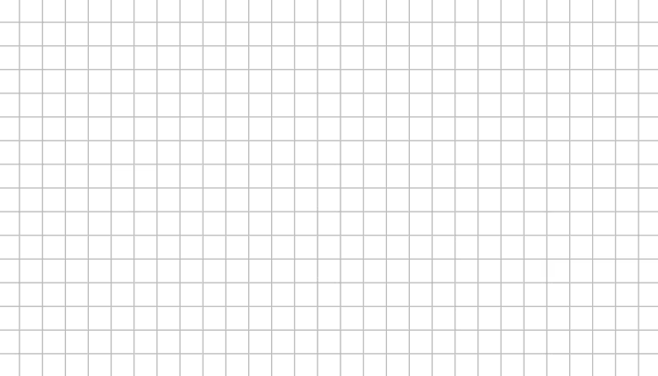
B / FOUR PRIMITIVES
조형 언어
FROM DINING TO FORM
달그락의 시각언어는 특정 제품의 외형에서 출발하지 않는다. 우주에서의 식사 경험을 구성하는 가장 기본적인 요소를 추출하고, 이를 단순한 기하학적 형태로 치환했다. 네 요소는 독립적인 아이콘이 아니라, 결합과 회전을 통해 제품·그래픽·공간에 반복 적용되는 Docking Language의 기본 단위다.
FOOD
Point
식사의 출발점이 되는 가장 작은 단위.
The smallest unit of food and the starting point of every meal.
TABLEWARE
Curve
음식과 사용자의 행동을 받아들이고 감싸는 구조.
A form that receives and holds both food and the act of eating.
CONNECTION
Line
음식, 도구, 사용자와 환경을 하나의 행동으로 연결하는 관계.
A system that links food, tools, and users into one dining experience.
GRAVITY
Axis
방향과 안정성이 사라진 환경에서 다시 기준을 만들어주는 축.
A force that restores stability and orientation in low gravity.
C / DOCKING SYMBOL
심볼
하나의 구조에서 방향만 바꾸다
심볼은 원형 구조와 수직·수평 축의 결합을 기본으로 한다. ‘+’는 서로 다른 요소가 한 지점에서 만나 하나의 안정된 구조를 이루는 모습이며, 음식·도구·사용자가 서로의 기능을 보완해 하나의 식사 행동을 완성하는 상태를 뜻한다. 같은 구조를 45도 회전하면 ‘×’가 만들어진다. ‘+’가 기능의 추가와 연결이라면, ‘×’는 기존 식사 과정에서 발생했던 불필요한 조작과 부담을 줄이는 의미를 가진다.
SYMBOL 01
+
기능이 더해지는 결합
SYMBOL 02
×
제약을 줄이는 교차
+ 필요한 기능을 더하고 × 불필요한 부담을 덜어낸다
D / LOGO SYSTEM
로고
고정되지 않은 상태에서도 하나의 흐름을 유지하다
로고는 심볼과 워드마크가 결합과 회전으로 연결되는 구조를 따른다. 기본형과 조합형, 그리고 제품과 공간에 적용되는 활용형을 하나의 규칙 안에서 운용한다.
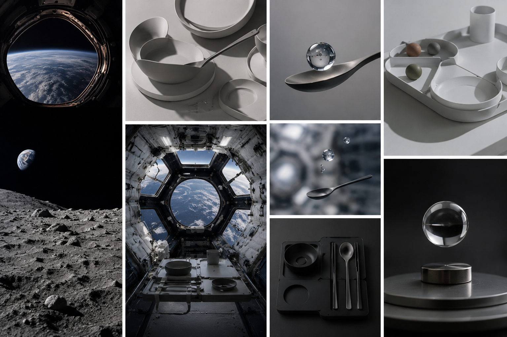
기본형
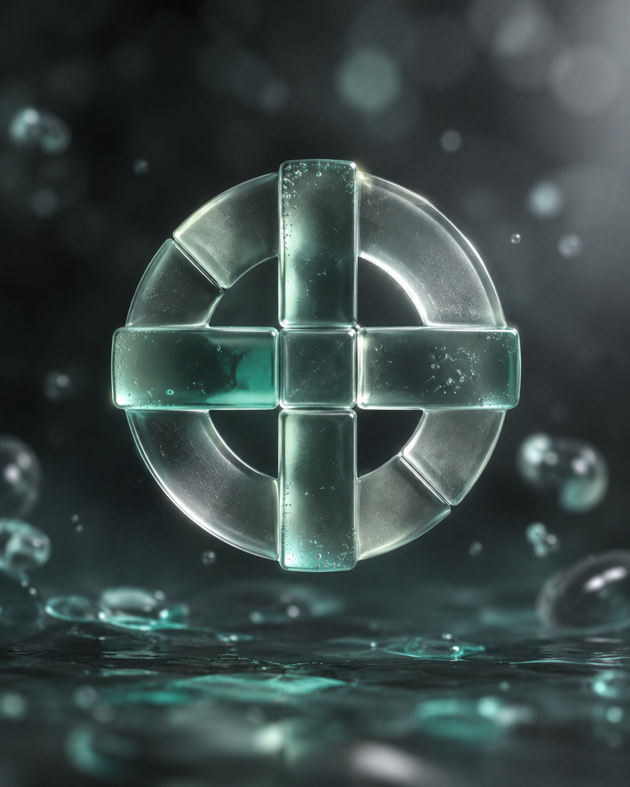
조합형
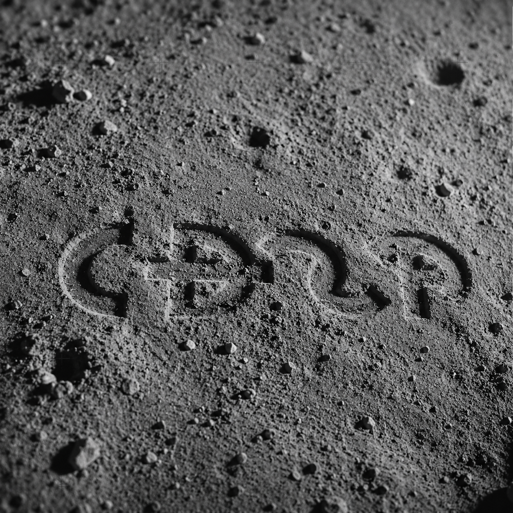
활용형
E / VISUAL APPLICATION
적용
하나의 심볼이 표면, 물성, 공간으로 확장되다
심볼은 그래픽 마크에 머무르지 않고 다양한 물성과 환경에 적용된다. 투명한 유리와 내부 발광에서는 가볍게 부유하는 구조로, 금속 소재에서는 단단한 도킹 장치처럼, 달 표면에 각인될 때는 하나의 흔적이자 좌표처럼 인식된다. 동일한 조형이 재료와 환경에 따라 다른 인상을 만들면서도 연결·고정·회전이라는 공통된 브랜드 언어는 유지된다.
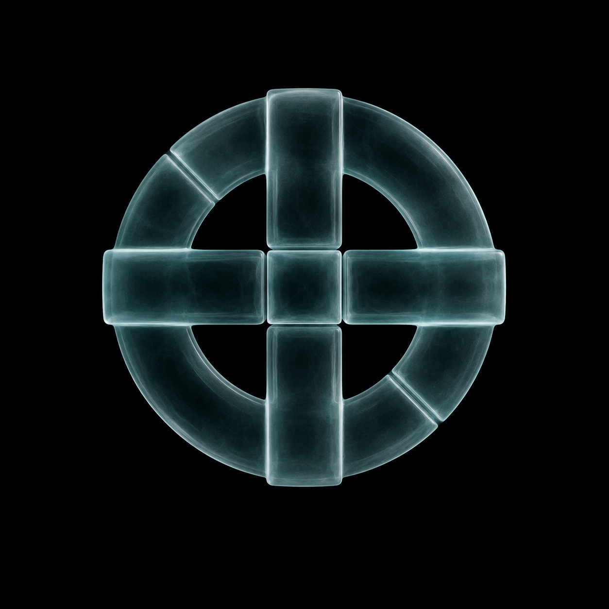
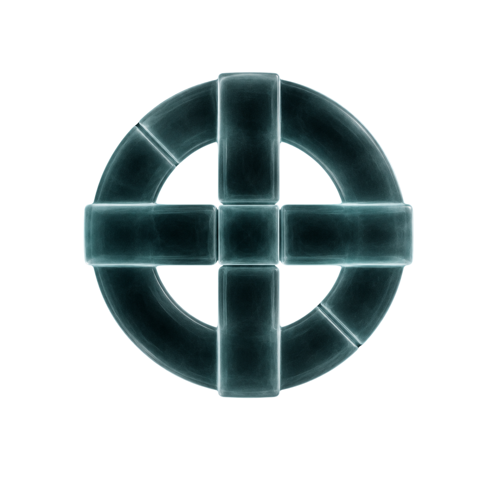
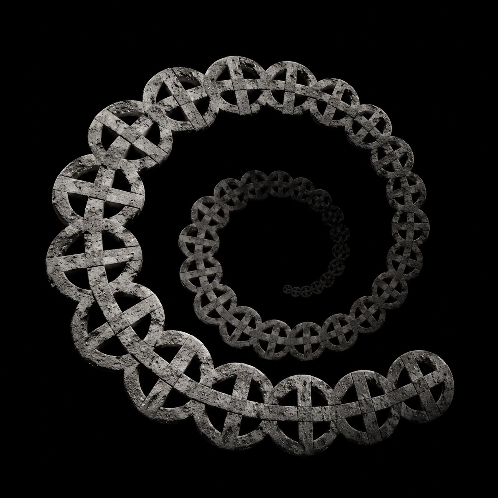
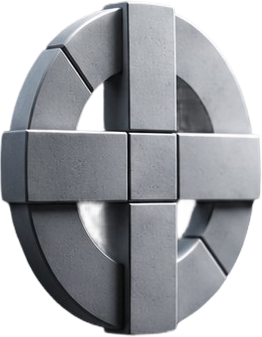
01 DOCK
02 STABILIZE
03 NOURISH
04 MONITOR
05 ADAPT
06 CONNECT
F / CONCEPT VISUAL
컨셉 비주얼
안정성과 부유 사이의 긴장감
시각 이미지는 우주를 단순히 미래적인 배경으로 표현하는 대신, 부유하는 상태와 이를 붙잡는 구조 사이의 대비에 집중한다. 무중력에서 떠오르는 음식과 액체, 궤도와 원형 구조, 달 표면의 입자와 금속성 소재를 통해 Floating / Docking / Surface / Orbit의 감각을 시각적으로 확장했다.
FLOATING
DOCKING
SURFACE
ORBIT
COLOR
DEEP SPACE
#090A0D
SURFACE
#11141A
LINE
#1E232B
POINT
#5CE5C3
TEXT
#F2F3F1
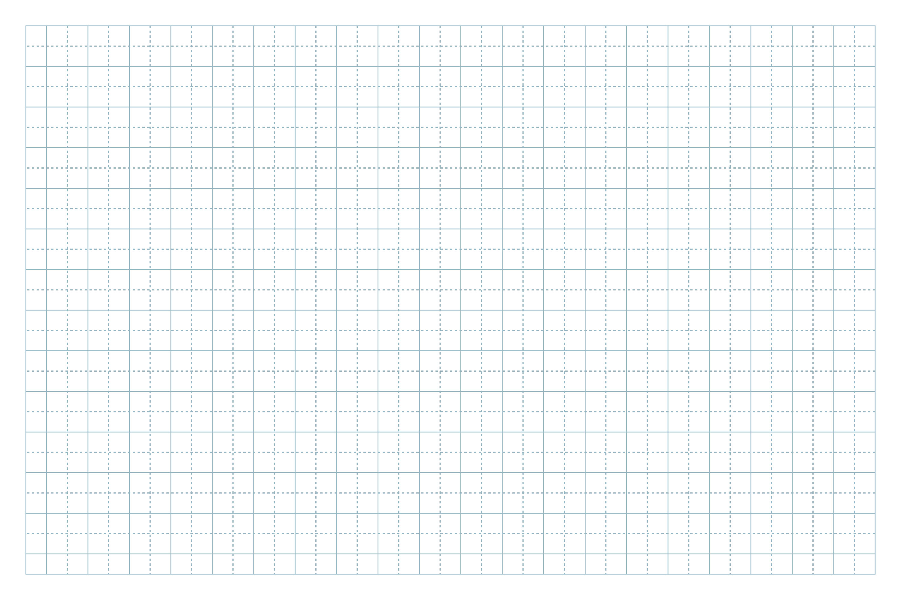
CONCEPT VISUAL · 달그락 비주얼 시스템
DAL GEU LOCK® VISUAL SYSTEM · LUNAR DINING EQUIPMENT COLLECTION · DOCKING LANGUAGE SPECIFICATION V1.0
N E X T
아카이브
06 · ARCHIVE →
DAL GEU LOCK · 달그락
브랜드 포인트 컬러 #5CE5C3